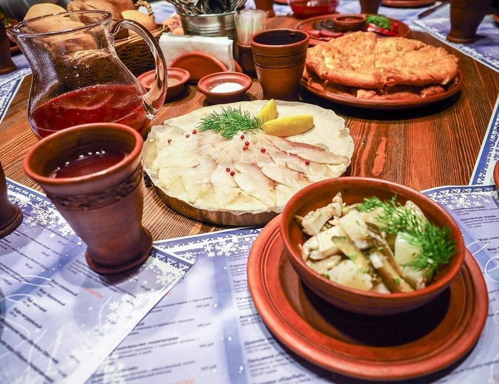
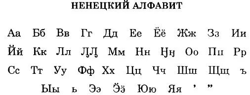
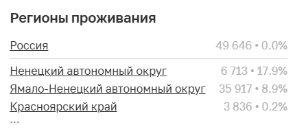

Коренные народы Сибири. Ненцы.
Численность и расселение
Язык
Занятия и быт
Жилище
Религия
Традиции
Одежда
Национальные праздники
Национальные блюда
Добро пожаловать!
На этом сайте вы можете узнать о коренных народах Сибири, в частности о ненцах.
  
Назад
Вперёд